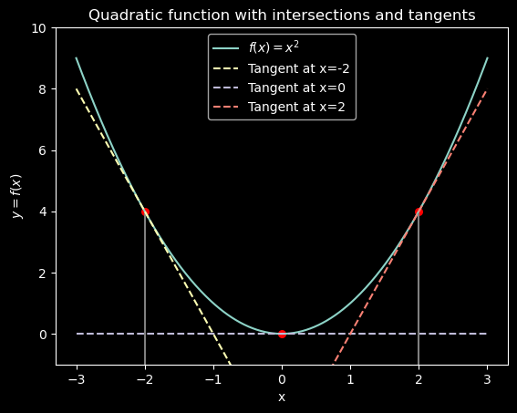

Algunas técnicas de derivadas e integrales necesarias para el curso
Derivadas
Comenzamos con algunas reglas de derivación. Los fundamentos de la derivación se pueden encontrar en cualquier libro de cálculo, por ejemplo, en el libro de Stewart, y en su curso de Fundamentos matemáticos. Aquí sólo recordaremos algunas reglas básicas.
En el anterior, hacemos uso de la regla 1 para calcular la derivada de \(x^2\) y de otra regla que no hemos mencionado: la derivada de la exponencial, que es igual a la exponencial:
Notar que \(\ln(x^2) = 2 \ln(x)\) debido a la regla logarítmica \(\ln(x^a) = a \ln(x)\). Otras reglas de logaritmos:
\(\ln(xy) = \ln(x) + \ln(y)\).
\(\ln(x/y) = \ln(x) - \ln(y)\).
\(\ln(x^a) = a \ln(x)\).
\(\ln(\exp(x)) = x\).
La interpretación geométrica de la derivada es la pendiente de la recta tangente a la curva en un punto dado. Por ejemplo, la pendiente de la recta tangente a la curva \(y = x^2\) en el punto \(x=1\) es \(2\).
A continuación se muestra un ejemplo usando la función \(f(x) = x^2\).
import numpy as npimport matplotlib.pyplot as pltplt.rcParams['figure.figsize'] = [7, 3]plt.style.use('seaborn-whitegrid')# Define the quadratic function and its derivativedef f(x):return x**2def f_prime(x):return2*x # Equation for the tangent line at a given x valuedef tangent_line(x, x1): y1 = f(x1) m = f_prime(x1)return m * (x - x1) + y1# Define the 5 pointspoints = [-2, 0, 2]# Generate the x values for plotting the curvex = np.linspace(-3, 3, 400)y = f(x)plt.plot(x, y, label="$f(x) = x^2$")# For each of the 5 points, plot a vertical dotted line, annotate the x value, and plot the tangent linefor p in points: y_p = f(p) plt.axvline(x=p, color='gray', linestyle='-', ymax=(y_p -min(y))/(max(y) -min(y))) # Scale the vertical line plt.annotate(f"{p}", (p, -6), textcoords="offset points", xytext=(0,5), ha='center') plt.scatter(p, y_p, color='red', marker='o', s=30) y_tangent = tangent_line(x, p) plt.plot(x, y_tangent, label=f"Tangent at x={p}", linestyle="--")plt.title("Quadratic function with intersections and tangents")plt.xlabel("x")plt.ylabel("$y=f(x)$")plt.legend(loc="best")plt.ylim(min(y) -1, max(y) +1) # adjust the y-axis limitsplt.show()

Derivadas parciales
La derivada parcial de una función \(f(x,y)\) respecto a la variable \(x\) se define como:
El procedimiento es sencillo. Primero derivamos respecto a \(x\) y consideramos a \(y\) como una constante. Luego, derivamos respecto a \(y\) y consideramos a \(x\) como una constante. Por ejemplo, si \(f(x,y) = x^2 + 2xy + y^2\), entonces:
\[
\frac{\partial f}{\partial x} = 2x + 2y
\]
Las reglas de derivación son las mismas que para derivadas ordinarias.
En este caso, dado que la función es una suma, podemos derivar cada término por separado, y aplicamos la regla de derivación de la potencia: \(\frac{\partial}{\partial x} \Big( x^2 \Big) = 2x\). Dado que tratamos a \(y\) como una constante, el tercer término se vuelve 0, dado que la derivada de una constante es 0. El segundo término también tratamos a \(y\) como una constante, y solo derivamos con respecto a \(x\), por lo que obtenemos \(2y\).
Ejemplos que involucran derivadas parciales de funciones de dos variables:
La integral definida de una función \(f(x)\) en el intervalo \([a,b]\) se define como el área bajo la curva de \(f(x)\) en el intervalo \([a,b]\). La integral definida se denota como:
\[
\int_a^b f(x) \text{d}x = F(b) - F(a)
\]
En donde \(F(a)\) es la integral de \(f(x)\) evaluada en \(a\), y \(F(b)\) es la integral de \(f(x)\) evaluada en \(b\). Por ejemplo, si \(f(x) = x^2\), y su integral es \(F(x) = \frac{1}{3}x^3\), entonces:
from sympy import*# Define the symbolx = symbols('x')# Define the functionf =2# Integrate the function from 0 to 1integral_value = integrate(f, (x, 0, 1))print(integral_value)